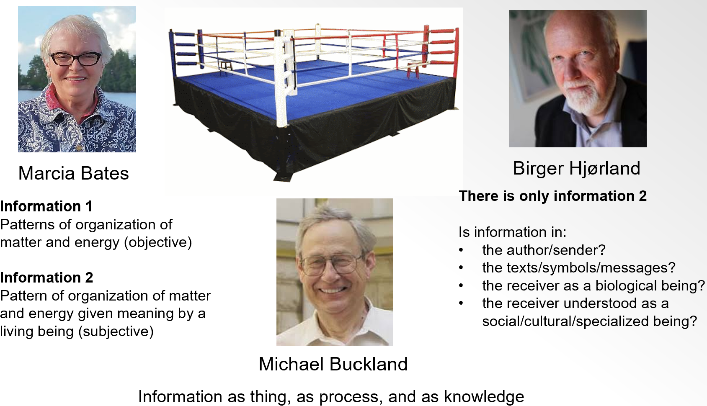
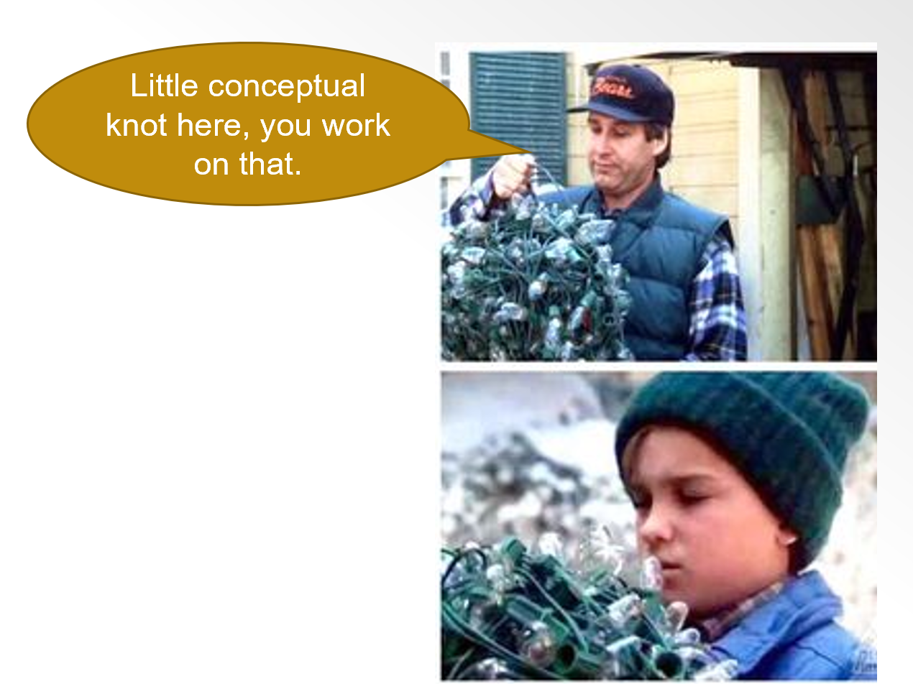
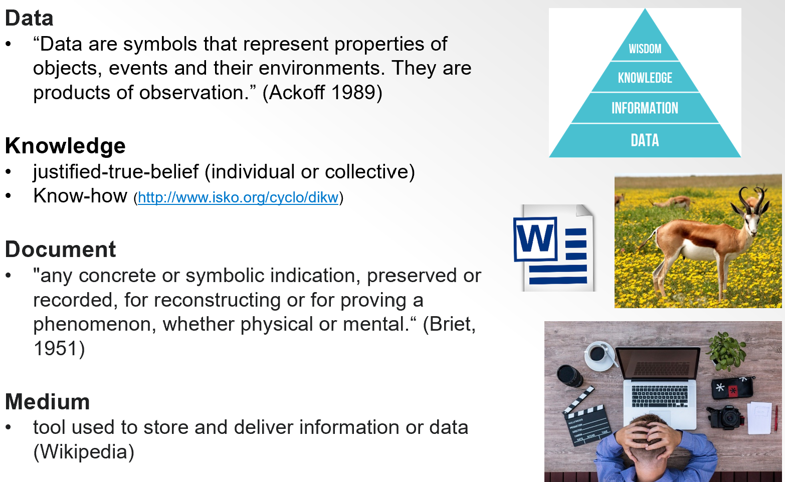
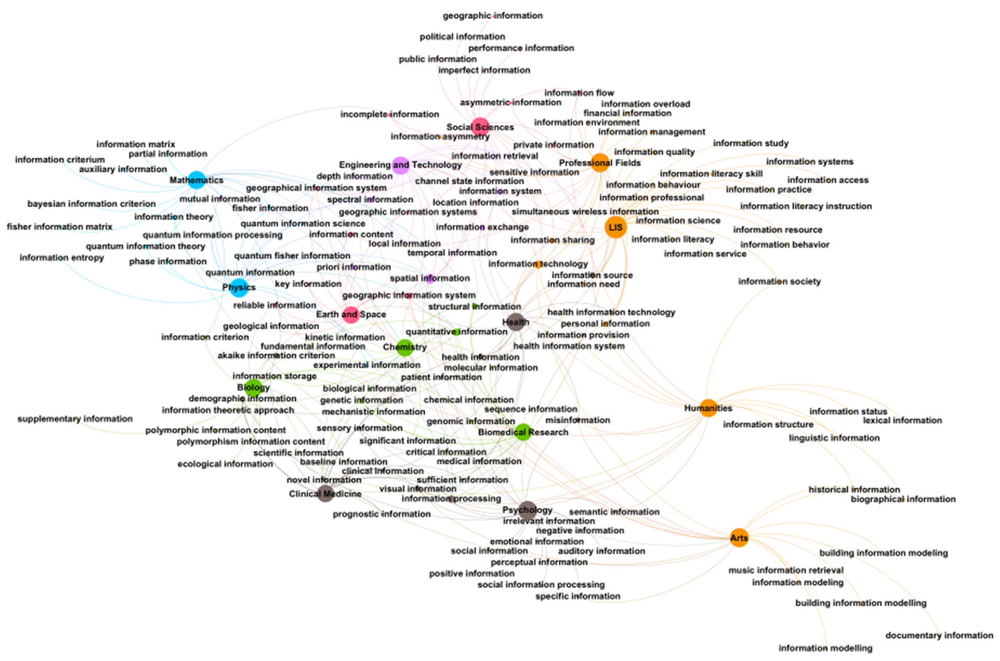

Information in Society - Week 2
What is information?
Today’s plan
- ISSA presentation
- Short presentation + open discussions
- Fun
What’s in a name?
If we are going to call ourselves information specialists, experts, professionals, managers, scientists, etc., it seems appropriate that we should seek to understand what it is that we are experts of…
What is information?

Disentangling the conceptual knot

Information in its conceptual context

Information in its disciplinary context
